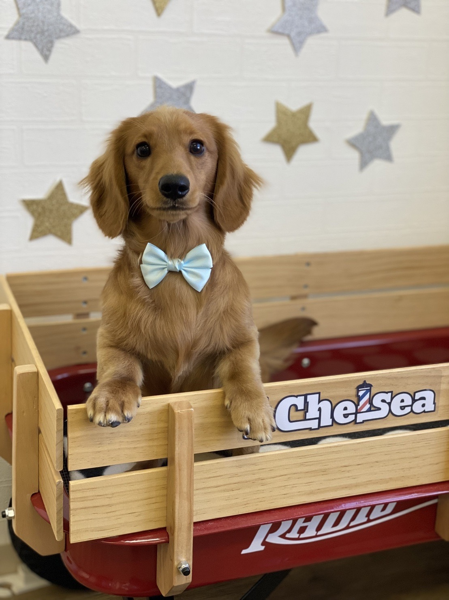
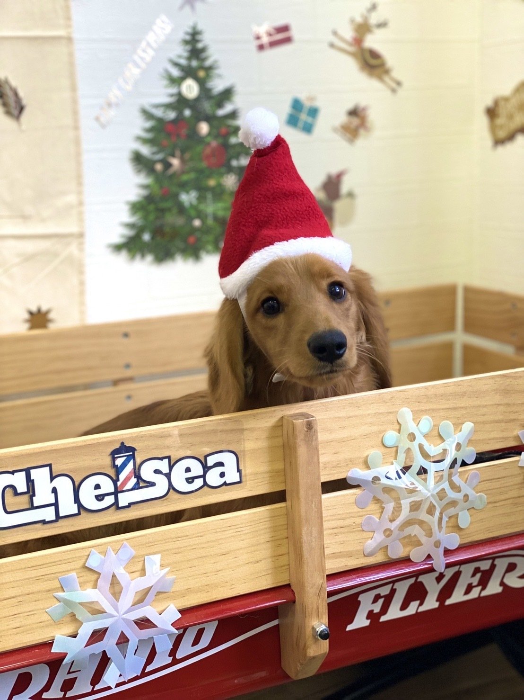

飼い主にインタビュー
飼うことになった経緯やおススメの施設等を聞いてみました。
ワンちゃんの紹介
名前：こむぎ
性別：オス
犬種：ミニチュアダックスフンド
性格：ビビり、慣れたらやんちゃ
好きなこと：追いかけっこが好きです。
追いかけてほしくてわざと靴下をくわえて逃げたりします。
飼いだしてから2年半ほどたっています。 選んだ理由は、前の子が茶色いダックスだったので似ていた子を選だそうです。
Q.早速ですが、ワンちゃんの好物または、食べれないものはありますか
飼い主様：ミルク系の骨ガムはおもちゃだと思ってるのか食べてくれません。
Q.現在飼っているワンちゃんを飼うようになった経緯を教えてくだい。
飼い主様：ペットショップをまわっていた際にへそ天で寝ている姿を見つけ、 ちょっと抜けてそうなところに惹かれてその日の内にお迎えしました。
聞き手：写真を見ると凛々しい顔立ちなのに、へそ天したゆるい姿を想像すると落差で思わず一目惚れしてしまいそうですね。
Q.徳島でワンちゃんと一緒に行くならおすすめの施設とかありますか?その理由もお願いします。
飼い主様：すみません、特に行った事がないです。 強いて言えばドッグサロンチェルシーというトリミングサロンがおすすめです。 飼い方のアドバイスを貰えたり、毎回終わった後に写真を撮って送ってくれたりします。 うちの子も初めての時は怖がってキャリーに隠れていましたが、 お迎えに行ったら元気に走り回っていたぐらい楽しませてもらったみたいです。
聞き手：ビフォーアフターがわかれば、トリミングしがいがある?うれしいサービスですね。あと、飼い方のアドバイスも貰えるなら行きたくなりますね。
Q.ワンちゃんと暮らす中で何か変化したことがあればお教えください。
飼い主様：高齢になってきた両親が犬を飼い始めたことで笑顔が増え、 散歩に行くようになった事で体も若返ってきた気がするとよく言っています。 私も朝、犬に起こされるので早寝早起きになりました。
聞き手：私の知人も、散歩のために運動と早寝早起きが習慣になったそうです。 自分だけでは、サボってしまいそうですがワンちゃんためなら起きれそうですね。 あと、ワンちゃんの顔見るだけでなぜだか笑顔が増えますね。
Q.ワンちゃんと暮らす中で、困ったことやエピソードがあれば教えてください。
飼い主様：困ったことは、トイレをよく失敗したり、服のボタンを全部引きちぎられてたりする事です。
聞き手：トイレとかは、地味にストレスですね。
お気に入りの服なら、ちょっと笑えないですね。
本日は、どうもありがとうございました。
凛々しいお顔が印象のワンちゃんでした。 飼いだして2年半ということで、やんちゃな時期ではないでしょうか? ワンちゃんと一緒に暮らすことで、もちろん大変なこともありますが生活に潤いや規則的な 生活をもたらしてくれてるのかもしれませんね。 今回は、こむぎ君のご紹介でした。